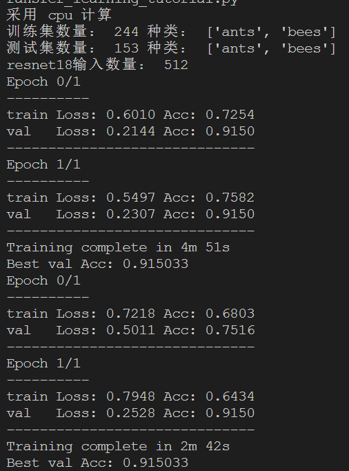
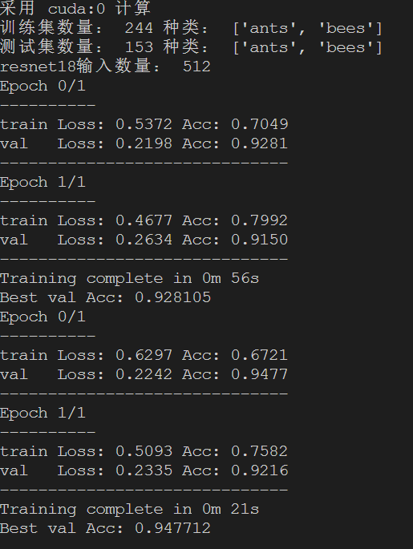

Purdue机器学习入门（二）迁移学习
文章目录

迁移学习
我们学习了数字分类后举一反三可以对任何物品进行分类，比如经典的猫狗分类，蜜蜂蚂蚁分类等，只是改变了cnn的一些参数和模型即可，随着我们的野心越来越大 想对海量图片进行分类，这时候计算机处理起来太慢了，而且每次从头训练也太浪费了吧。能不能在其他人训练好了的模型上接着训练其他内容呢？Sure,这就是迁移学习。 也就是让机器学习以前的知识，而不必从零开始。想象一下，机器能够快速迁移大量学习内容，如果再能够主动学习，那么人类在它眼里将如此渺小……
下面我们以蜜蜂蚂蚁分类为例，迁移著名的cnn分类模型resnet，一分钟内让我们的电脑具有90%以上准确率的识别能力。
1 2 3 4 5 6 7 8 9 10 11 12 13 14 15 16 17 18 19 20 21 22 23 24 25 26 27 28 29 30 31 32 33 34 35 36 37 38 39 40 41 42 43 44 45 46 47 48 49 50 51 52 53 54 55 56 57 58 59 60 61 62 63 64 65 66 67 68 69 70 71 72 73 74 75 76 77 78 79 80 81 82 83 84 85 86 87 88 89 90 91 92 93 94 95 96 97 98 99 100 101 102 103 104 105 106 107 108 109 110 111 112 113 114 115 116 117 118 119 120 121 122 123 124 125 126 127 128 129 130 131 132 133 134 135 136 137 138 139 140 141 142 143 144 145 146 147 148 149 150 151 152 153 154 155 156 157 158 159 160 161 162 163 164 165 166 167 168 169 170 171 172 173 174 175 176 177 178 179 180 181 182 183 184 185 186 187 188 189 190 191 192 193 194 195 196 197 198 199 200 201 202 203 204 205 206 207 208 209 210 |
# -*- coding: utf-8 -*-
# from __future__ import print_function, division
import torch
import torch.nn as nn
import torch.optim as optim
from torch.optim import lr_scheduler
import numpy as np
import torchvision
from torchvision import datasets, models, transforms
import matplotlib.pyplot as plt
import time
import os
import copy
plt.ion() # interactive mode
# 标准化导入图片步骤，不需要深入了解，照做即可
data_transforms = {
'train':
transforms.Compose([
transforms.RandomResizedCrop(224), #将图片压缩到224×224分辨率，resnet vgg等模型要求
transforms.RandomHorizontalFlip(), #图像水平翻转，让机器能够认识镜像图像
transforms.ToTensor(),
transforms.Normalize([0.485, 0.456, 0.406], [0.229, 0.224, 0.225]) #数字是固定的，将图像数据归一化到0-1
]),
'val':
transforms.Compose([
transforms.Resize(256),
transforms.CenterCrop(224),
transforms.ToTensor(),
transforms.Normalize([0.485, 0.456, 0.406], [0.229, 0.224, 0.225])
]),
}
PATH = r'.\data\hymenoptera_data' 注意修改下载位置，格式为两个文件夹，分别train和val，每个下边有两个文件夹ants和bee（分类名称），图片按照类别放入
data_dir = PATH
image_datasets = { # 导入数据集标准化步骤，不需了解
x: datasets.ImageFolder(os.path.join(data_dir, x), data_transforms[x])
for x in ['train', 'val']
}
dataloaders = { # 导入dataloader标准化步骤，不需了解
x: torch.utils.data.DataLoader(
image_datasets[x], batch_size=4, shuffle=True, num_workers=0)
for x in ['train', 'val']
}
dataset_sizes = {x: len(image_datasets[x]) for x in ['train', 'val']}
class_names = image_datasets['train'].classes
# 强制使用cpu
# device = torch.device("cpu" if torch.cuda.is_available() else "cpu")
# 优先使用gpu，需要有nv显卡，并且安装驱动工具等
device = torch.device("cuda:0" if torch.cuda.is_available() else "cpu")
print('采用',device,'计算')
print('训练集数量：',len(image_datasets['train']),'种类：',image_datasets['train'].classes)
print('测试集数量：',len(image_datasets['val']),'种类：',image_datasets['val'].classes)
######################################################################
# Visualize a few images
# 显示一些输入图像
def imshow(inp, title=None):
"""Imshow for Tensor."""
inp = inp.numpy().transpose((1, 2, 0))
mean = np.array([0.485, 0.456, 0.406])
std = np.array([0.229, 0.224, 0.225])
inp = std * inp + mean
inp = np.clip(inp, 0, 1)
plt.imshow(inp)
if title is not None:
plt.title(title)
plt.pause(0.001) # pause a bit so that plots are updated
inputs, classes = next(iter(dataloaders['train']))
out = torchvision.utils.make_grid(inputs)
imshow(out, title=[class_names[x] for x in classes])
######################################################################
# Training the model
# 训练模型
def train_model(model, criterion, optimizer, scheduler, num_epochs=10):
since = time.time()
best_model_wts = copy.deepcopy(model.state_dict())
best_acc = 0.0
for epoch in range(num_epochs):
print('Epoch {}/{}'.format(epoch, num_epochs - 1))
print('-' * 10)
# Each epoch has a training and validation phase
for phase in ['train', 'val']:
if phase == 'train':
scheduler.step()
model.train() # Set model to training mode
else:
model.eval() # Set model to evaluate mode
running_loss = 0.0
running_corrects = 0
# Iterate over data.
for inputs, labels in dataloaders[phase]:
inputs = inputs.to(device)
labels = labels.to(device)
# zero the parameter gradients
optimizer.zero_grad()
# forward
# track history if only in train
with torch.set_grad_enabled(phase == 'train'):
outputs = model(inputs)
_, preds = torch.max(outputs, 1)
loss = criterion(outputs, labels)
# backward + optimize only if in training phase
if phase == 'train':
loss.backward()
optimizer.step()
# statistics
running_loss += loss.item() * inputs.size(0)
running_corrects += torch.sum(preds == labels.data)
epoch_loss = running_loss / dataset_sizes[phase]
epoch_acc = running_corrects.double() / dataset_sizes[phase]
print('{:5s} Loss: {:.4f} Acc: {:.4f}'.format(phase, epoch_loss,
epoch_acc))
# deep copy the model
if phase == 'val' and epoch_acc > best_acc:
best_acc = epoch_acc
best_model_wts = copy.deepcopy(model.state_dict())
print('-'*30)
time_elapsed = time.time() - since
print('Training complete in {:.0f}m {:.0f}s'.format(
time_elapsed // 60, time_elapsed % 60))
print('Best val Acc: {:4f}'.format(best_acc))
# load best model weights
model.load_state_dict(best_model_wts)
return model
######################################################################
# Generic function to display predictions for a few images
# 输出结果显示
def visualize_model(model, num_images=6):
was_training = model.training
model.eval()
images_so_far = 0
fig = plt.figure()
with torch.no_grad():
for i, (inputs, labels) in enumerate(dataloaders['val']):
inputs = inputs.to(device)
labels = labels.to(device)
outputs = model(inputs)
_, preds = torch.max(outputs, 1)
for j in range(inputs.size()[0]):
images_so_far += 1
ax = plt.subplot(num_images // 2, 2, images_so_far)
ax.axis('off')
ax.set_title('predicted: {}'.format(class_names[preds[j]]))
imshow(inputs.cpu().data[j])
if images_so_far == num_images:
model.train(mode=was_training)
return
model.train(mode=was_training)
######################################################################
# Load a pretrained model and reset final fully connected layer.
# 迁移学习重点，卷积层部分全部重用，因为该层主要是让机器具备识别图像的能力，比如边缘处理，锐度等等，但是最后的
# 全连接层数量要改，因为源网络是1000种图片分类，本例只需要分为2类
model_ft = models.resnet18(pretrained=True) #下载训练好的网络
num_ftrs = model_ft.fc.in_features #FC(Fully connected 全连接层修改) in_features输入数量
model_ft.fc = nn.Linear(num_ftrs, 2) #改为需要的2个输出
print('resnet18输入数量：',num_ftrs)
model_ft = model_ft.to(device)
criterion = nn.CrossEntropyLoss()
# Observe that all parameters are being optimized
optimizer_ft = optim.SGD(model_ft.parameters(), lr=0.001, momentum=0.9)
# Decay LR by a factor of 0.1 every 7 epochs 用于更改学习率
exp_lr_scheduler = lr_scheduler.StepLR(optimizer_ft, step_size=7, gamma=0.1)
#蜜蜂蚂蚁大概400多图片，epoc=2时，CPU 需要5分钟， GPU 55秒，差距明显
model_ft = train_model(
model_ft, criterion, optimizer_ft, exp_lr_scheduler, num_epochs=2)
visualize_model(model_ft) # 结果显示
######################################################################
# ConvNet as fixed feature extractor
# 同样是迁移学习，这次不更改卷积网络参数，也就是不进行反向梯度计算，完全重用，耗时更少
# 结果表明耗时减少一半，精度基本不变
model_conv = torchvision.models.resnet18(pretrained=True)
for param in model_conv.parameters():
param.requires_grad = False
num_ftrs = model_conv.fc.in_features
model_conv.fc = nn.Linear(num_ftrs, 2)
model_conv = model_conv.to(device)
criterion = nn.CrossEntropyLoss()
optimizer_conv = optim.SGD(model_conv.fc.parameters(), lr=0.001, momentum=0.9)
exp_lr_scheduler = lr_scheduler.StepLR(optimizer_conv, step_size=7, gamma=0.1)
model_conv = train_model(
model_conv, criterion, optimizer_conv, exp_lr_scheduler, num_epochs=2)
visualize_model(model_conv)
plt.ioff()
plt.show() |
结果如下，CPU：

GPU：

文章作者 Jeff Liu
上次更新 2019-01-23